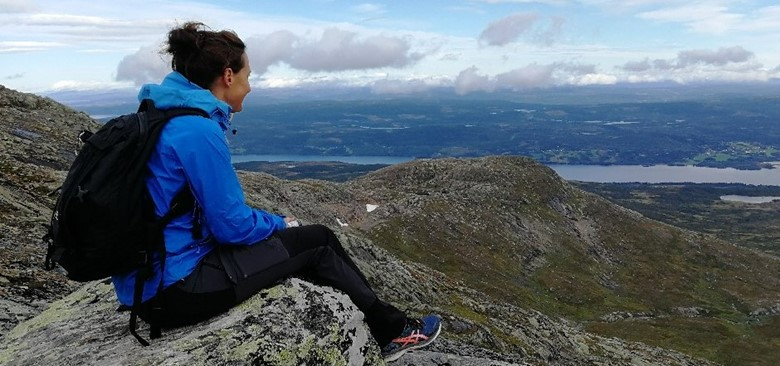

<section class="about">
    <div class="container">
        <div class="content">
            

        <h1>MIN HÄLSORESA</h1>
        <h2>”När vi förstår hur kropp och själ<br>     
            hänger ihop blir det lättare att ta hand<br>   
           om oss själva och göra medvetna hälsosamma val.”<br>
           Linda Garneij
           </h2>

           <h3>Linda Garneij heter jag och det är jag som driver företaget Conscious Living. Vad roligt att du har hittat hit. Välkommen!</h3>

        <div class="halsokost">   
           <div class="text1">  
              <p>
                I större delen av mitt liv har jag haft en hög stressnivå i min kropp. Som liten var jag blyg, osäker och känslig. Genom livet har jag tampats med prestationskrav och låg självkänsla. 
                Hösten 2015 sa min kropp ifrån på riktigt. Totalt utmattad, överväldigad av känslor, minnet var som bortblåst, hjärnan fungerade inte som den skulle och både syn och hörsel försämrades. 
                Våren 2020 kom nästa smäll. Under ett års tid kunde min kropp periodvis inte behålla mat. Jag tappade vikt och blev svagare och svagare. Jag vägde 44 kg när det var som värst. Stundtals tvivlade jag på att jag skulle överleva när jag inte fick någon läkarhjälp. 
                Förtvivlad över att inte få hjälp via vården vände jag mig till slut till alternativmedicinen. Och där fick jag hjälp. Jag är ett levande exempel på hur långvarig stress kan bryta ner en människokropp. 
                I stället för att ta läkemedel för att dämpa olika symtom fick jag läka kroppen från grunden genom naturlig, ekologisk, läkande kost och örter samt naturliga näringstilllskott utan kemikalier. Jag blev även fri från allergier, eksem i hörselgångarna och andra besvär.
                Sedan 2015 gör jag även en stor inre resa.  Den handlar om det själsliga och det andliga. Om tankar och känslor. Om existensen 
              </p>
            </div>

            <div class="text2">  
                <p>
                    och medvetandet, det vi verkligen ÄR. Och om att våga följa sina drömmar.
                    Det har blivit väldigt tydligt för mig att kropp och själ hänger ihop och att ett holistiskt synsätt är en förutsättning för läkning både kroppsligt och själsligt och för en hållbar hälsa i längden. Kroppen är som ett eget ekosystem. Om det uppstår problem på ett ställe ger det följdproblem på andra områden. Det går inte att läka genom att bara titta på ett område.
                    
                    Idag arbetar jag med det kvantfysiska balanseringsinstrumentet QUEXs. Ett fantastiskt instrument för att hitta stress och obalanser, hjälpa kroppen tillbaka till balans, jobba förebyggande men även som ett stöd i dom vägledande samtalen. Det här instrumentet slutar aldrig att fascinera mig.
                    
                    Jag är utbildad inom frekvensmedicin, diplomerad KBT-coach och diplomerad mindfulnessinstruktör. Jag har gått flertalet kurser inom personlig- och andlig utveckling, mental träning, läkande kost med mera och har även oräkneliga timmar av självstudier inom dessa områden men även inom det otroligt spännande området kvantfysik.
                    Det här är så intressant och spännande så jag har blivit en smula ”nördig”, men jag älskar det! 
                </p>
            </div>
        </div>    

            <h4>
                Min resa den fortsätter. Det har inte alla gånger varit lätt men utan det jag varit med om skulle jag inte ha hittat vägen dit jag är idag. Så trots allt som hänt så är jag evigt tacksam för det som varit och allt jag har lärt mig. Och för det jag nu kan hjälpa andra med. 
            </h4>

        </div>
    </div>    
</section>